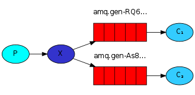

RabbitMQ est ce qu'on appelle un message broker.
Grosso-modo, ça sert à gérer des files de messages. Il permet ainsi de reçevoir et de transmettre des messages de différentes manières.
Je te le recommande fortement car c'est un outil léger, très robuste, performant et simple d'utilisation.
Il existe depuis plus de 10 ans maintenant et est utilisé dans de grosses entreprises comme Ford, Instagram ou le New York Times.
S'il fallait schématiser ce que représenterait Rabbitmq dans l'IRL, ça serait le bureau de poste, la boite aux lettres ainsi que le facteur !
Communication
Il utilise un protocole de communication appelé AMQP (Advanced Message Queuing Protocol), qui permet de standardiser les échanges. Ce protocole provient d'un consortium entre différentes entreprises tel que JPMorgan, Microsoft, Red Hat et Cisco.
Il en existe de nombreuses implémentations dans plein de langages, comme en Python avec Pika, en Java, en Php, en Javascript, en Ruby, etc...
Vocabulaire
Si tu fouilles un peu dans le doc officielle, tu remarqueras l'utilisation de certains vocabulaires.
Histoire de ne pas être complètement perdu, voici les plus importants :
- Producer: celui qui envoie des messages

- Queue: file qui stocke les messages

- Consumer: celui qui reçoit les messages

- Exchange: là où on peut déposer les messages
Installation
Sur Ubuntu, Rabbitmq est présent dans les dépôts officiels, donc rien de plus simple à installer:
# Install the package
apt-get install -y rabbitmq-server
À l'aide de rabbitmqctl, tu vas pouvoir ajouter des utilisateurs, gérer les permissions, créer des Virtual Hosts (oui, c'est bien le même concept que pour Apache), effacer des utilisateurs, etc...
# Add rabbitmq user
rabbitmqctl add_user myuser mypassword
# Add rabbitmq vhost
rabbitmqctl add_vhost myproject
# Add a tag to the user
rabbitmqctl set_user_tags myuser management
# Add vhost all permissions (conf, read, write) to the user
rabbitmqctl set_permissions -p myproject myuser ".*" ".*" ".*"
# Delete the guest user
rabbitmqctl delete_user guest
# Check user authentication
rabbitmqctl authenticate_user myuser mypassword
Ici, j'ai volontairement effacé l'utilisateur guest qui est activé par défaut.
Administration
Tu peux administrer Rabbitmq de deux manières:
- Via une interface web disponible sur http://server-name:15672/ en activant le plugin management:
rabbitmq-plugins enable rabbitmq_management
- ou en ligne de commande via rabbitmqctl:
# users
rabbitmqctl list_users
rabbitmqctl delete_user <username>
rabbitmqctl change_password <username> <newpassword>
# queue
rabbitmqctl list_queues -p myproject
rabbitmqctl purge_queue queue
rabbitmqctl list_connections
rabbitmqctl list_channels
rabbitmqctl list_consumers
rabbitmqctl list_exchanges
# vhost
rabbitmqctl list_vhosts
rabbitmqctl list_permissions -p myproject
Installation du client Python
Pour installer le client Python Pika, tu utilises pip comme d'hab':
pip install pika
Scénarios
Voyons maintenant les différents types de scénarios possibles pour son usage.
Hello World

- Le producer envoie des messages dans la queue hello.
- Le consumer reçoit les messages de cette queue.
Le code du producer send.py:
#!/usr/bin/env python
import pika
connection = pika.BlockingConnection(pika.ConnectionParameters(host='localhost'))
channel = connection.channel()
channel.queue_declare(queue='hello')
channel.basic_publish(exchange='',
routing_key='hello',
body='Hello World!')
print(" [x] Sent 'Hello World!'")
connection.close()
Le code du consumer receive.py:
#!/usr/bin/env python
import pika
connection = pika.BlockingConnection(pika.ConnectionParameters(host='localhost'))
channel = connection.channel()
channel.queue_declare(queue='hello')
def callback(ch, method, properties, body):
print(" [x] Received %r" % body)
channel.basic_consume(callback,
queue='hello',
no_ack=True)
print(' [*] Waiting for messages. To exit press CTRL+C')
channel.start_consuming()
Et au final, tu as comme résultat:
python receive.py
# => [*] Waiting for messages. To exit press CTRL+C
# => [x] Received 'Hello World!'
python send.py
# => [x] Sent 'Hello World!'
Work queues

- Le producer envoie des jobs à effectuer dans une queue.
- Plusieurs consumers se répartissent les tâches.
- C'est utile pour des tâches longues (encodage, importation, copies).
Le code du producer new_task.py:
#!/usr/bin/env python
import pika
import sys
connection = pika.BlockingConnection(pika.ConnectionParameters(host='localhost'))
channel = connection.channel()
channel.queue_declare(queue='task_queue', durable=True)
message = ' '.join(sys.argv[1:]) or "Hello World!"
channel.basic_publish(exchange='',
routing_key='task_queue',
body=message,
properties=pika.BasicProperties(
delivery_mode = 2, # make message persistent
))
print(" [x] Sent %r" % message)
connection.close()
Le code du consumer worker.py:
#!/usr/bin/env python
import pika
import time
connection = pika.BlockingConnection(pika.ConnectionParameters(host='localhost'))
channel = connection.channel()
channel.queue_declare(queue='task_queue', durable=True)
print(' [*] Waiting for messages. To exit press CTRL+C')
def callback(ch, method, properties, body):
print(" [x] Received %r" % body)
time.sleep(body.count(b'.'))
print(" [x] Done")
ch.basic_ack(delivery_tag = method.delivery_tag)
channel.basic_qos(prefetch_count=1)
channel.basic_consume(callback,
queue='task_queue')
channel.start_consuming()
Il suffit alors d'exécuter les fichiers pour simuler le fonctionnement de la file de jobs.
Publish/Subscribe

- Le producer veut délivrer un message à plusieurs consumers.
- À l'inverse du scénario précédent, tous les consumers recoivent le message.
- Le producer envoie son message à l'exchange qui se chargera de le délivrer aux différentes files.
- L'exchange de type fanout délivre le message à toutes les files.
Le code du producer emit_log.py:
#!/usr/bin/env python
import pika
import sys
connection = pika.BlockingConnection(pika.ConnectionParameters(host='localhost'))
channel = connection.channel()
channel.exchange_declare(exchange='logs',
exchange_type='fanout')
message = ' '.join(sys.argv[1:]) or "info: Hello World!"
channel.basic_publish(exchange='logs',
routing_key='',
body=message)
print(" [x] Sent %r" % message)
connection.close()
Le code du consumer receive_logs.py:
#!/usr/bin/env python
import pika
connection = pika.BlockingConnection(pika.ConnectionParameters(host='localhost'))
channel = connection.channel()
channel.exchange_declare(exchange='logs',
exchange_type='fanout')
result = channel.queue_declare(exclusive=True)
queue_name = result.method.queue
channel.queue_bind(exchange='logs',
queue=queue_name)
print(' [*] Waiting for logs. To exit press CTRL+C')
def callback(ch, method, properties, body):
print(" [x] %r" % body)
channel.basic_consume(callback,
queue=queue_name,
no_ack=True)
channel.start_consuming()
Comme avant, tu lances les deux fichiers pour tester.
Routing

- L'exchange de type direct redirige automatiquement dans la bonne file en fonction d'une clé.
- C'est utile pour gérer des logs par exemple.
Le code du producer emit_log_direct.py:
#!/usr/bin/env python
import pika
import sys
connection = pika.BlockingConnection(pika.ConnectionParameters(host='localhost'))
channel = connection.channel()
channel.exchange_declare(exchange='direct_logs',
exchange_type='direct')
severity = sys.argv[1] if len(sys.argv) > 2 else 'info'
message = ' '.join(sys.argv[2:]) or 'Hello World!'
channel.basic_publish(exchange='direct_logs',
routing_key=severity,
body=message)
print(" [x] Sent %r:%r" % (severity, message))
connection.close()
Le code du consumer receive_logs_direct.py:
#!/usr/bin/env python
import pika
import sys
connection = pika.BlockingConnection(pika.ConnectionParameters(host='localhost'))
channel = connection.channel()
channel.exchange_declare(exchange='direct_logs',
exchange_type='direct')
result = channel.queue_declare(exclusive=True)
queue_name = result.method.queue
severities = sys.argv[1:]
if not severities:
sys.stderr.write("Usage: %s [info] [warning] [error]\n" % sys.argv[0])
sys.exit(1)
for severity in severities:
channel.queue_bind(exchange='direct_logs',
queue=queue_name,
routing_key=severity)
print(' [*] Waiting for logs. To exit press CTRL+C')
def callback(ch, method, properties, body):
print(" [x] %r:%r" % (method.routing_key, body))
channel.basic_consume(callback,
queue=queue_name,
no_ack=True)
channel.start_consuming()
Tu t'attends alors à reçevoir des messages de type info, warning et error:
python receive_logs_direct.py info warning error
# => [*] Waiting for logs. To exit press CTRL+C
Par exemple, pour émettre un message de type error:
python emit_log_direct.py error "Run. Run. Or it will explode."
# => [x] Sent 'error':'Run. Run. Or it will explode.'
Topics

- L'exchange de type topic permet de rediriger sur la bonne file en fonction de critères multiples.
- Le message avec la clé de routage quick.orange.rabbit ira dans les 2 files.
Le code du producer emit_log_topic.py:
#!/usr/bin/env python
import pika
import sys
connection = pika.BlockingConnection(pika.ConnectionParameters(host='localhost'))
channel = connection.channel()
channel.exchange_declare(exchange='topic_logs',
exchange_type='topic')
routing_key = sys.argv[1] if len(sys.argv) > 2 else 'anonymous.info'
message = ' '.join(sys.argv[2:]) or 'Hello World!'
channel.basic_publish(exchange='topic_logs',
routing_key=routing_key,
body=message)
print(" [x] Sent %r:%r" % (routing_key, message))
connection.close()
Le code du consumer receive_logs_topic.py:
#!/usr/bin/env python
import pika
import sys
connection = pika.BlockingConnection(pika.ConnectionParameters(host='localhost'))
channel = connection.channel()
channel.exchange_declare(exchange='topic_logs',
exchange_type='topic')
result = channel.queue_declare(exclusive=True)
queue_name = result.method.queue
binding_keys = sys.argv[1:]
if not binding_keys:
sys.stderr.write("Usage: %s [binding_key]...\n" % sys.argv[0])
sys.exit(1)
for binding_key in binding_keys:
channel.queue_bind(exchange='topic_logs',
queue=queue_name,
routing_key=binding_key)
print(' [*] Waiting for logs. To exit press CTRL+C')
def callback(ch, method, properties, body):
print(" [x] %r:%r" % (method.routing_key, body))
channel.basic_consume(callback,
queue=queue_name,
no_ack=True)
channel.start_consuming()
Tu peux maintenant utiliser les topics de différentes manières :
# To receive all the logs run:
python receive_logs_topic.py "#"
# To receive all logs from the facility "kern":
python receive_logs_topic.py "kern.*"
# Or if you want to hear only about "critical" logs:
python receive_logs_topic.py "*.critical"
# You can create multiple bindings:
python receive_logs_topic.py "kern.*" "*.critical"
# And to emit a log with a routing key "kern.critical" type:
python emit_log_topic.py "kern.critical" "A critical kernel error"
RPC

- RPC permet d'exécuter une fonction distante en mode Request/Reply.
- Le client envoie une request avec une clé unique et le nom de la file de retour.
- Le serveur attend les requêtes, exécute la fonction et retourne la réponse.
Le code de la partie server rpc_server.py :
#!/usr/bin/env python
import pika
connection = pika.BlockingConnection(pika.ConnectionParameters(host='localhost'))
channel = connection.channel()
channel.queue_declare(queue='rpc_queue')
def fib(n):
if n == 0:
return 0
elif n == 1:
return 1
else:
return fib(n-1) + fib(n-2)
def on_request(ch, method, props, body):
n = int(body)
print(" [.] fib(%s)" % n)
response = fib(n)
ch.basic_publish(exchange='',
routing_key=props.reply_to,
properties=pika.BasicProperties(correlation_id = \
props.correlation_id),
body=str(response))
ch.basic_ack(delivery_tag = method.delivery_tag)
channel.basic_qos(prefetch_count=1)
channel.basic_consume(on_request, queue='rpc_queue')
print(" [x] Awaiting RPC requests")
channel.start_consuming()
Le code de la partie cliente rpc_client.py :
#!/usr/bin/env python
import pika
import uuid
class FibonacciRpcClient(object):
def __init__(self):
self.connection = pika.BlockingConnection(pika.ConnectionParameters(host='localhost'))
self.channel = self.connection.channel()
result = self.channel.queue_declare(exclusive=True)
self.callback_queue = result.method.queue
self.channel.basic_consume(self.on_response, no_ack=True,
queue=self.callback_queue)
def on_response(self, ch, method, props, body):
if self.corr_id == props.correlation_id:
self.response = body
def call(self, n):
self.response = None
self.corr_id = str(uuid.uuid4())
self.channel.basic_publish(exchange='',
routing_key='rpc_queue',
properties=pika.BasicProperties(
reply_to = self.callback_queue,
correlation_id = self.corr_id,
),
body=str(n))
while self.response is None:
self.connection.process_data_events()
return int(self.response)
fibonacci_rpc = FibonacciRpcClient()
print(" [x] Requesting fib(30)")
response = fibonacci_rpc.call(30)
print(" [.] Got %r" % response)
Et pour tester ça :
python rpc_server.py
# => [x] Awaiting RPC requests
python rpc_client.py
# => [x] Requesting fib(30)
Conclusion
Cette introduction résume la doc officielle, mais n'hésite pas à te plonger dedans pour plus de détail si besoin.
Il est possible, par exemple, d'activer la persistance des données, d'authentifier les connections via un serveur LDAP et autres.
Dans une prochaine partie, nous verrons comment utiliser Celery avec Rabbitmq.